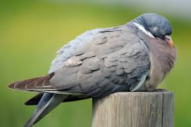

Tap me so that I can showoff my skills!! (>_<)
Pigeon, any of several hundred species of birds constituting the family Columbidae (order Columbiformes). Smaller forms are usually called doves, larger forms pigeons. An exception is the white domestic pigeon, the symbol known as the “dove of peace.” Pigeons occur worldwide except in the coldest regions and the most remote islands. About 250 species are known; two-thirds of them occur in tropical Southeast Asia, Australia, and the islands of the western Pacific, but the family also has many members in Africa and South America and a few in temperate Eurasia and North America. All members of the family suck liquids, rather than sip and swallow as do other birds, and all pigeon parents feed their young “pigeon’s milk,” the sloughed-off lining of the crop, the production of which is stimulated by the hormone prolactin. The nestling obtains this “milk” by poking its bill down the parent’s throat
Pigeons are beautiful birds, they are also known as domestic birds. Basically, pigeons like to live in groups and move along with their peer groups. Pigeons are the most attractive creation of God, they are adored by everyone due to their gentle nature.  Pigeons rarely disturb other birds or people, they like calm surroundings more. Pigeons are very intellectual, they can make out or sense any unforeseen incident or calamities. Nowadays many people across the World breed pigeons, one who breeds pigeons referred to as Fanciers.
In earlier days pigeon flying competitions were held between the Pigeon owners, pigeons kept flying in the sky all day long, the pigeon who flew for longer hours would be declared as the winner pigeon. Environmental change and increase in the hunting of pigeons lead them to the verge of extinction since they have no place to live in can be the other reason for the decreasing ratio of pigeons.